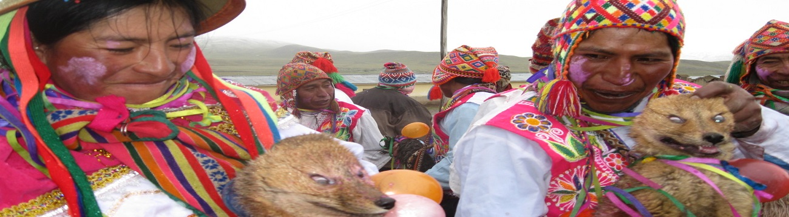
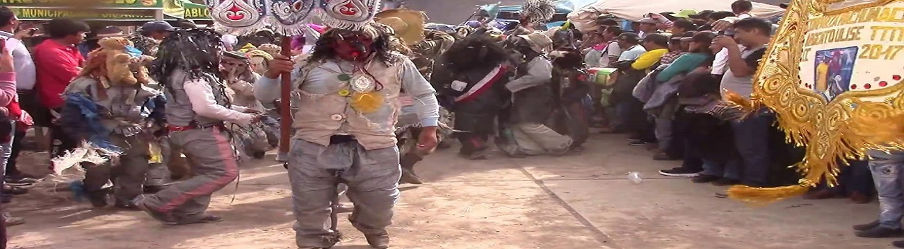

COSTUMBRES
DE LA PROVINCIA DE CANCHIS

COSTUMBRES

COSTUMBRES
El Carnaval de Tinta es una fiesta para todo el pueblo, que tiene varios días de duración, siguiendo el calendario eclesiástico. Se inicia en el mes de Febrero (puqllay killa, mes de los juegos) y finaliza el miércoles de ceniza. En este mes también se realizan las ceremonias de la marcación y señalakuy de los ganados, así como otras fiestas. El Carnaval de Tinta, se ve influenciado principalmente en su forma por las culturas andinas nativas, con el “puqllay” (hecho social religioso precolombino), y en menor grado por el tradicional carnaval europeo.
La festividad se inicia el día 15 de agosto, víspera de la festividad con participación de comparsas quema de castillos entre otros con la concurrencia de miles de ciudadanos.
Y se realiza actividades con la MISA DE FIESTA en honor a la festividad del Señor de Pampacucho dirigida por el Obispo Prelado de Sicuani, Monseñor Pedro Alberto Bustamante López enseguida se inicio con la procesión por las diferentes arterias de Sicuani. La participación de la población fue total, miles de personas se volcaron a las diferentes actividades, recordando el día central de la aparición de la Imagen del señor de Pampacucho.
Condorsencca Tahuantinsuyo se localiza en el distrito de Sicuani, perteneciente a la provincia de Canchis de del lado norte de Sicuani cuenta con dos lagunas "Sacacanicocha"y"Laguna Isquina Sacacani"